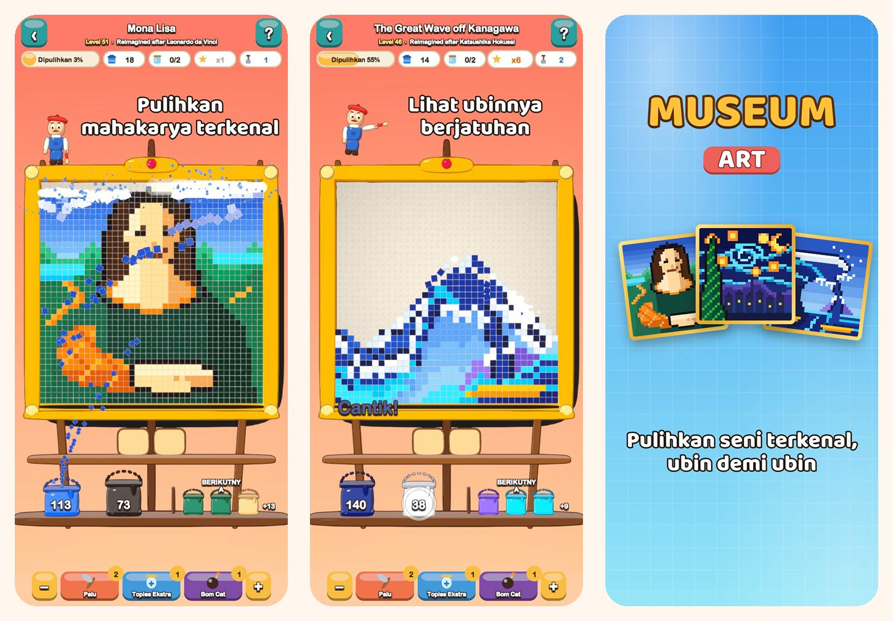

Museum Art
Puzzle Warna Seni Piksel
Ketuk satu warna dan lihat ubinnya berjatuhan. Pulihkan 51 gambar seni piksel, dari Mona Lisa hingga Istanbul, Paris, Roma, dan New York.
Unduh di App Store
Tentang game
Setiap gambar di Museum Art tersusun dari ubin persegi warna-warni. Singkirkan ubinnya satu warna demi satu warna dan lihat gambarnya bersinar lagi.
CARA BERMAIN
- Ketuk area warna yang menyentuh baris paling bawah, atau ketuk ember di rak: ubinnya terbang ke embernya.
- Ubin di atasnya meluncur turun seperti pasir dan membuka langkah baru.
- Belum ada ember untuk suatu warna? Simpan dulu di stoples pada nampan.
- Makin jarang memakai nampan, makin banyak bintang yang kamu dapat.
51 GAMBAR UNTUK DIPULIHKAN
- Gambar cerah dan mudah untuk memulai: balon udara, perahu layar, kucing, dan mercusuar.
- Alam: puncak bersalju, danau gunung, bunga sakura, dan gurun saat senja.
- Keliling dunia ke Istanbul, Paris, Roma, dan New York.
- Brankas Para Maestro: The Great Wave, The Starry Night, Water Lilies, The Milkmaid, Impression, Sunrise, dan Mona Lisa, digambar ulang sebagai seni piksel.
SANTAI DAN ADIL
- Setiap level bisa diselesaikan tanpa booster, dan mencoba lagi itu gratis.
- Booster untuk saat-saat sulit: Palu, Stoples Tambahan, dan Bom Cat.
- Perbesar tampilan untuk melihat detail kapan saja.
- Ada fakta menarik untuk setiap gambar.
- Bisa dimainkan dalam 19 bahasa.